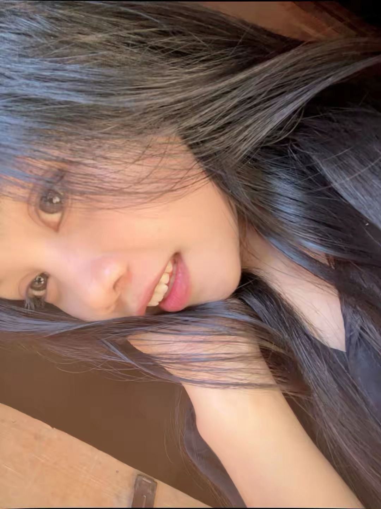

Terima kasih sudah menjadi bagian terindah dalam hidupku. Di hari spesialmu ini, aku berharap semua mimpimu menjadi kenyataan. Aku akan selalu ada untuk mendukung dan menyayangimu. I love you more than words can say💖. ✨